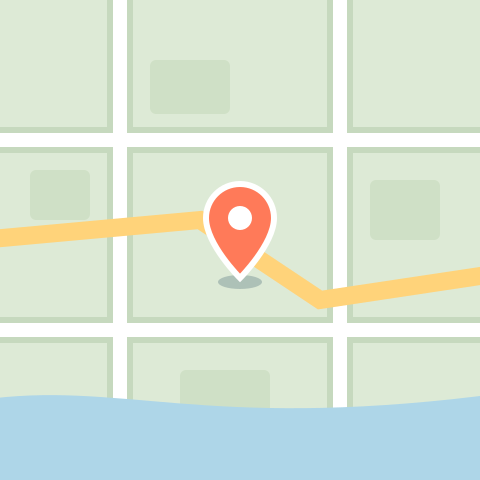

Odontopediatria em São Paulo
O dentista da criança
pode ser a melhor
parte do dia
Consulta sem susto, no ritmo de cada criança — inclusive de quem precisa de mais calma e menos barulho.
- 4,9 no Google · 835 avaliações
- CRO-SP 51709 · RQE em Odontopediatria
Atalhos rápidos
Quem cuida do sorriso
da sua criança
Sou a Dra. Kátia, odontopediatra. Meu trabalho começa antes do dente: começa quando a criança entende o que vai acontecer e descobre que aqui ninguém vai forçar nada.
Atendo bebês, crianças e adolescentes — e tenho formação e rotina de consultório pensadas para crianças autistas e com outras necessidades específicas. Cada consulta anda no ritmo de quem está na cadeira.
- CRO-SP 51709Registro ativo no Conselho
- RQE em OdontopediatriaEspecialista reconhecida
- 4,9 no Google835 avaliações de famílias
O que a gente faz aqui
Cada tratamento tem um mergulho diferente. Nenhum começa sem a criança saber o que vai acontecer.
-
Odontologia para bebês
Da chegada do primeiro dentinho: higiene, amamentação, chupeta, freio da língua e prevenção de cárie precoce.
-
Prevenção e limpeza
Profilaxia, aplicação de flúor e selantes. A consulta de rotina que evita o tratamento grande lá na frente.
-
Atendimento adaptado (TEA)
Dessensibilização em etapas, agenda em horário calmo e comunicação visual. Ver como funciona.
-
Restaurações e cárie
Tratamento de cárie em dente de leite e permanente, com anestesia confortável e técnica minimamente invasiva.
-
Ortodontia preventiva
Acompanhamento do crescimento, hábitos de sucção, respiração bucal e encaminhamento na hora certa.
-
Urgência e trauma
Dor de dente, queda, dente quebrado ou avulsionado. Chame no WhatsApp: a orientação nos primeiros minutos muda o resultado.
Atendimento inclusivo
Criança autista também
tem consulta tranquila
Não existe criança “difícil de atender”. Existe consulta mal adaptada. A gente adapta.
- Conversa antes da consultaA família conta o que funciona e o que dispara desconforto. A gente planeja a partir disso.
- Visita de reconhecimentoA primeira ida pode ser só conhecer a sala, sentar na cadeira e ir embora. Sem procedimento nenhum.
- Dessensibilização em etapasCada passo só avança quando o anterior já está confortável. Quantas sessões forem necessárias.
- Ambiente com menos estímuloHorário calmo na agenda, luz e som reduzidos, abafador de ruído disponível.
- Comunicação visualSequência de figuras, contagem e “conta-me-mostra-faz” para a criança antecipar o que vem.
- Nada à forçaContenção física não faz parte do método. Se não deu hoje, a gente tenta de novo.
Como é a primeira consulta
Cerca de 50 minutos. A criança manda no ritmo; a gente cuida do resto.
Conversa com a família
Histórico, medos, rotina de higiene e alimentação. Você fala primeiro, a gente escuta.
Apresentação da sala
A criança conhece a cadeira, o espelhinho e o “aspirador”. Tudo com nome e sem pressa.
Exame cuidadoso
Avaliação dos dentes, gengiva, mordida e freio. Só avança com a criança confortável.
Plano explicado
O que precisa, o que pode esperar e quanto custa — por escrito, antes de qualquer procedimento.
O que trazer
- Documento da criança e carteirinha do convênio, se houver
- Exames ou relatórios anteriores (inclusive de terapias, no caso de TEA)
- O brinquedo, fone ou objeto que acalma — pode entrar na sala
Chegue 10 minutos antes: dá tempo de a criança se ambientar antes de ser chamada.
O que as famílias contam
Espaço reservado para depoimentos de famílias atendidas — publicados só com autorização de cada responsável. Enquanto isso, as 835 avaliações no Google estão abertas para leitura. Ver avaliações no Google
Dúvidas que chegam sempre
Com que idade é a primeira consulta?
Assim que nascer o primeiro dentinho, ou até o primeiro aniversário — o que vier antes. Nessa fase a consulta é curta e serve muito mais para orientar a família do que para tratar.
Meu filho tem muito medo de dentista. E agora?
A gente separa uma consulta só para ele conhecer o consultório, sem nenhum procedimento. Medo costuma vir de não saber o que vai acontecer — então explicamos tudo antes, mostramos cada instrumento e só seguimos com autorização dele.
Como funciona o atendimento para criança autista?
Conversamos antes com a família, agendamos em horário calmo, usamos apoio visual e avançamos por etapas de dessensibilização. Nada é feito à força. Os detalhes estão na seção Autismo e TEA.
Dente de leite com cárie precisa tratar mesmo?
Precisa. Ele guarda o espaço do dente permanente, participa da fala e da mastigação, e a infecção pode atingir o germe do dente que está por baixo. Cárie em dente de leite não “espera cair”.
Vocês atendem convênio?
Consulte os convênios atendidos e a possibilidade de reembolso pelo WhatsApp — respondemos com o valor e o passo a passo antes de você agendar.
O responsável pode entrar na sala?
Pode, sempre. Em algumas etapas a criança se solta mais sozinha e a gente sugere aguardar por perto — mas a decisão final é da família.

Onde a gente fica
Rua Exemplo, 000 — sala 00
Bairro · São Paulo — SP · CEP 00000-000
Segunda a sexta, 9h às 19h
Sábado, 9h às 13h